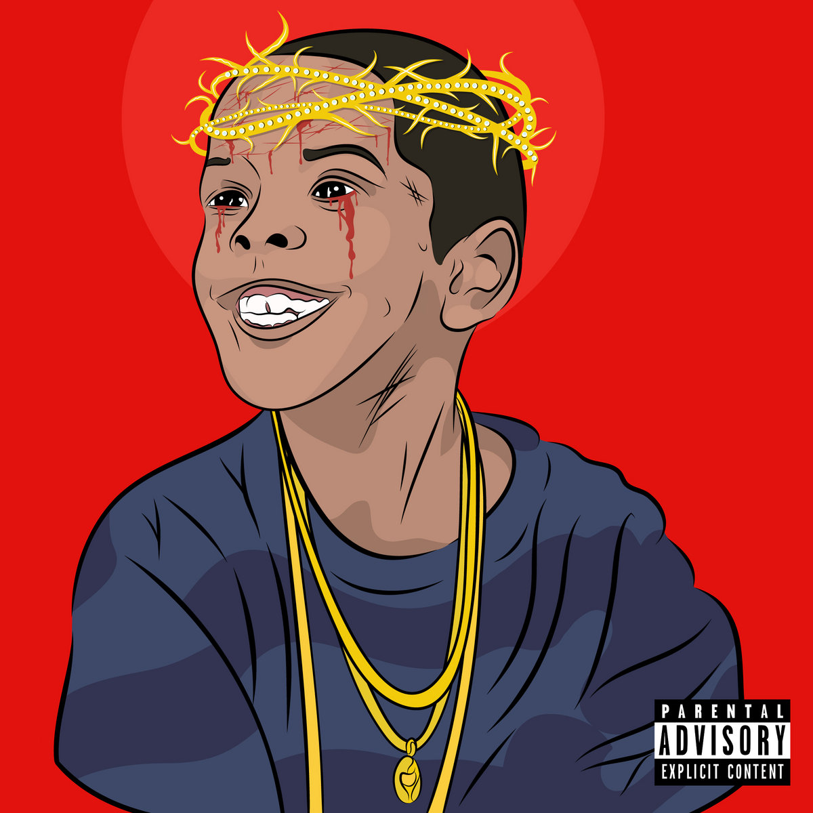
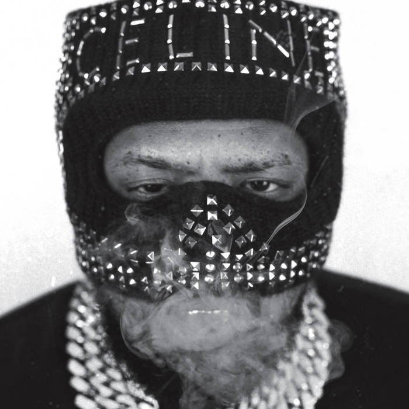

Westside Gunn is the architect of Griselda Records and a curator of raw, luxurious street art. Known for his distinctive voice and fashion-forward vision, his albums blend grimy boom-bap with high-art aesthetics. He turns every project into an experience.

Flygod
HWH 8: Side B